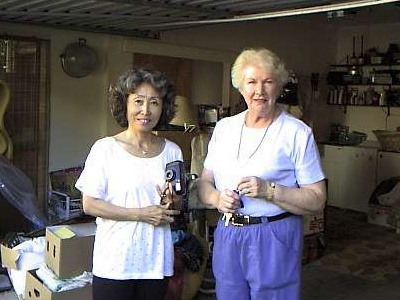
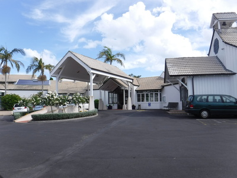
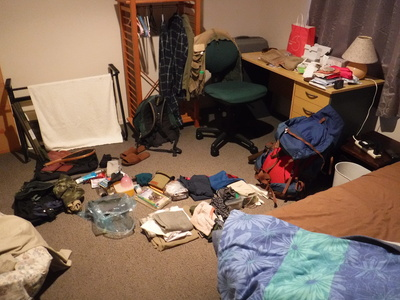

釣行日誌 ＮＺ編 「一期一会の旅：A Sentimental Journey」
ジョーさんとの再会、そして....
11/26(MON)-2
日本でルートの要所要所の地図をグーグルマップで調べ、印刷してクリアファイルに入れて来たので、それを見て出発直前に予習した。両手に運転用の革手袋をはめる。８年前に借りたレンタカーは、車内用の艶出し剤をハンドルまで付けて磨いたのか、異様に滑りやすく、素手ではツルツルで苦労したことがあったのだ。空港エリアを出てステートハイウェイ20Aに乗るのは問題無く、続いて同20号線に入り、16番出口で一般道15号線：Hillsborough Rd へと車を進める。ここまでは問題無かった。しかし、15号線は地図では判らなかったが、意外とアップダウンが激しく、目印にしていた大型ショッピングセンターや、左折しなければならなかった大きな森のある公園：Craigavon Park の交差点などをなぜか見落として、本来のルートを行き過ぎてしまった。公園の西の端まで来たところで
『これはどうも道を間違えているな....』
と気づき、左折して脇道に入ってから路側帯に停める。公園で遊んでいる人に道を訊ねようかと思うが誰もいない。しょうがないので山勘でその道を東（のような気がした）へ戻り、しばらく進むと目指す Connell St. の標識があったので安堵しつつ右折し、すぐにリタイヤメントハウスの看板を見つけた。
「やっと着いたか！」
訪問客用のスペースからちょうど１台出たので、そこへ車を入れ、カメラを持って出る。とても綺麗な建物である。受付にてジョー・ハーマン夫人に面会したい旨を伝えると、部屋番号と行き方を案内してくれた。廊下をぐるぐると回り、談話室のような部屋を通り過ぎ、言われた部屋番号の前までたどり着いた。ドアは開いていたのでそっと覗くと、ジョーさんがベッドに横たわってテレビを見ていた。
「Hi, Jo!」
と声を掛けて歩み寄ったが、ジョーさんは僕が誰だか、にわかには思い出せないようだった。ベッドに近寄り彼女を間近に見て、
「ジョー、僕だよ。ゴウだよ！」
と繰り返し呼びかけると、ようやく僕のことがわかったようで、消え入りそうな弱々しい声で、
「ゴウ、よく来てくれたわね....」
と彼女はつぶやいた。
真っ白になった彼女の髪としわの増えた顔を見て、ああ、ジョーさんも歳をとられたなぁ....と心を打たれた。僕の父と同い年、1931年生まれだから、今年で87歳になるはずだ。８年前の訪問時にはまだ元気でホンダの Jazz を運転し、僕を空港まで迎えに来てくれて、２泊３日の滞在中はランチや海岸の散歩などに乗せていってくれたりしたのだが、今はベッドでテレビを見るのがやっとという感じだった。同じホームステイメイトだった、横浜の植田紗加栄さんに見せてあげようと、写真を撮そうかと思ったが、とても痛々しく思われてためらわれたので、結局カメラは出さなかった。
僕がベッドに寄った際に、ベッド横に敷いてあるセンサーマットに載ってしまったらしく、看護スタッフの方が部屋に来られてスイッチを止めて戻っていった。
近寄って、ジョーさんの白くなった髪を撫でていると、彼女はしわの増えた頬にポタポタと涙を流した。僕ももらい涙が出てきた。
オークランドの語学学校で紹介されたホームステイ先が彼女の家で、そこで初めて彼女に会ってからもう19年が過ぎていた。

料理が上手で日本食にも詳しく、オープンマインドで話し好きなジョーさんは、本当に素晴らしいホストマザーであった。彼女に巡り会えなかったら、僕のニュージーランド留学はまったく別のものになっていただろう。本当にラッキーだった。
「ジョー、サカエさんは元気だよ！」
そう言って、長らくガンで闘病生活を送っている植田さんのことは告げなかった。
会話らしい会話もあまり出来なかったが、長居をしたらジョーさんが疲れてしまうだろうと思い、20分ほどでおいとますることにした。おそらくはこれが最後、今生の別れになるだろう。部屋を出る前に見たジョーさんは、とても小さく見えた。
来たルートを戻って玄関に向かう。大勢の看護・医療スタッフたちが見えて、入居者さんは手厚いケアを受けているのだなぁと見受けられた。受付の女性にお礼を言って、建物を出る。せめて外観だけでも紗加栄さんに見せてあげようと写真を撮した。

ポーチの前の白い花が綺麗だった。
時刻は午後４時20分過ぎ。さて次はハミルトンまで南下だ。アップダウンの激しい湾岸の15号線を戻り、SH20に乗る。オークランド名物の渋滞に捕まる前に抜けたかったが、案の定空港の近くで前がつかえ始め、ついにはまったく動かなくなった。今夜は７時半からハミルトン・アングラーズクラブの月例会があり、それに出席したかったのだが、焦ってもどうしようもないのでFMラジオを付けて洋楽（当たり前！）を聴いて気を紛らす。
30分ほどノロノロと進んでいたのがようやく流れ始めたと思ったら、SH1に乗って少し走ったところで今度は突然の豪雨となり、ワイパーを全速で動かしても前がまったく見えない。こりゃ危ないと、１番左側の車線をゆっくり気を付けて走っていたら、なぜか工事中の区間で一般道に降りるランプに入ってしまい、まったく判らない町に出てしまった。これはアカン！と少し進んで左折し、路地でUターンして降りてきた道を戻る。ハミルトン左← というサインに従い、再び高速１号線に乗ることが出来て安堵した。
そこからは予習したコース通りに一路ハミルトンを目指す。制限速度は100kmだが、とても慣れぬ道でそこまでスピードを出す余裕は無く、85kmほどでトロトロ走って行く。しばらくすると後ろに車がつながるので、十分な直線区間が現れたところで左に寄せて後続車を抜かせてあげる。そんなことを繰り返しつつ、途中で休憩することも無く郊外のショッピングモールに着いた。ここの一角にサンドイッチ店のサブウェイがあるので、立ち寄って今夜の夕食を買い込んだ。今夜から４泊５日は、市内在住の大林さん宅にお世話になるのだが、アングラーズクラブのミーティングに出るつもりだったので、今夜の食事はご心配なくと伝えておいたのだ。サブウェイのカウンターで注文したサンドイッチ２個とジュースを受け取ると、見たところ高校生くらいの中国系の顔をした店員さんが、
「どこから来たの？」
と、訊ねてきたので、
「日本から。ずっと昔この街に住んでたんだ。ここは住むには良いところだよ。」
と返事をして代金を支払って店を出た。次は隣接する大型スーパーにて、オレンジジュースの大瓶ペットボトルを買う。３リットルで４.00 NZD（約320円）。これを３本買い込んだ。
ショッピングモールから大林さん宅までは５分とかからないのだが、地図を見ながら通りの名前を確認しつつゆっくり走る。通りを左に入ってすぐの敷地の高い家が大林さん宅であり、すぐに見つかった。ガレージの脇にカローラを頭から突っ込んで停め、とりあえずご挨拶に向かう。ご夫妻が玄関に出迎えてくれ、長旅をねぎらってくれた。挨拶もそこそこに準備してくださった客間に大荷物を運び入れ、ダイニングテーブルで一息つくと、どっと疲れが出て、アングラーズクラブのミーティングに出る気力が無くなってしまった。昔お世話になったデレックさんにはぜひ会いたかったのだけれど、体が言うことを聞かなかった。
懐かしい話題で歓談しながら夕食を３人でいただき、客間に行って荷物を床に広げた。明日はとりあえず洗濯をさせていただこう。

シャワーを浴びるとそのままベッドに溶け落ちた。
釣行日誌ＮＺ編 目次へ
サイトマップ
ホームへ
お問い合わせ